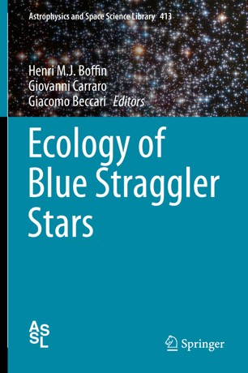

Blue Straggler Stars

Blue Straggler stars (BSS) are one of the exotic objects that populate stellar clusters, which I like to study. Located above and bluewards of the turn-off in the color-magnitude diagram of a stellar system, these stars thus appear to have found a way to rejuvenate themselves - a holy gral for many people! Two different mechanisms have been proposed to make a BSS: mass exchange in a binary system and the collision of two stars induced by stellar interactions in a dense stellar environment. Many BSS are indeed found to be binaries, and in particular in open clusters they seem to share the same properties as barium stars. There is thus no surprise that I am most interested by them.
I have thus organised a workshop and edited a book on the Ecology of Blue Straggler Stars.
I also collaborated on the study of BSS in globular clusters and in open clusters.